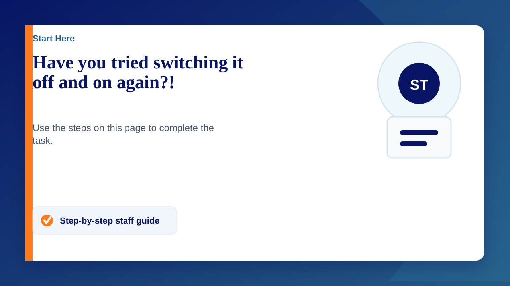

This is a running joke, but really, have you tried switching it off and on again? Although not always convenient, and there are other ways to resolve issues, so many times getting the device to start again resolves the issue. There are technical and non-technical reasons why this will resolve some issues but if possible, definitely give it a go.